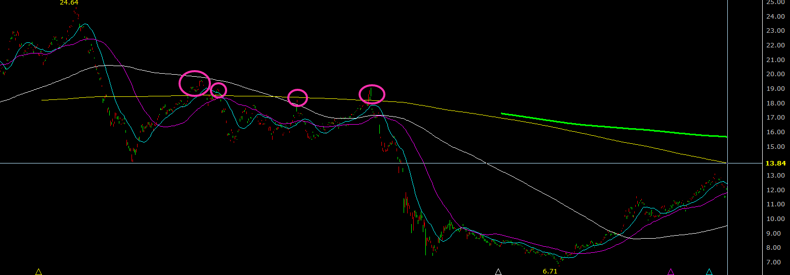

理財筆記 - 00642U

目錄
00642U 簡介
| 項目 | 內容 |
|---|---|
| 基金類型 | 指數型股票 (期貨ETF) |
| 成立日期 | 2015/08/27 |
| 成立日發行價格 | NT 20.00 |
| 掛牌日期 | 2015/09/07 |
| 掛牌淨值 | NT 19.83 |
| 經理費 | 1.00% |
| 保管費 | 0.15% |
| Bloomberg 代號 | 00642U TT EQUITY |
| 收益分配 | 無(收益再投資, 無配息) |
| 資料來源: 元大投信 |
投資風險
- 原油波動劇烈 -> 容易受國際情勢影響
- 此ETF在原油價格波動大時，易出現大幅折溢價狀況 -> 避免溢價時買進
- 淨值易因轉倉成本而遭侵蝕 -> 尤其如大幅下跌時
投資機會
- 原油仍為現代能源必需品 -> 便宜時可增加持有
- 可用相對小的金額參與原油市場
原油大事記
| 時間 | 事件 | 價格 (美元) | 備註 |
|---|---|---|---|
| 2020/04/21 | Covd-19疫情 + 石油價格戰 | 最低 -40.32 | 原油期貨首次跌至負值 (單日約-300%) |
| 2016/01/20 | 美國頁岩油大量產出，導致供過於求 | 最低 26.55 | 自前次最高點 -75% |
| 2011/01/31 | 埃及革命 | 最高 110 | 自前次最低點 +263% |
| 2008/12/23 | 全球金融海嘯 | 最低 30.28 | 5個月 -79% |
| 2008/07/11 | 中國及印度等國原油需求的提升 ? | 最高 147 | 史上最高油價 |
| 1990/08/02 | 波斯灣戰爭 | 14 -> 40 | 漲幅(+185%) |
| 1978/12/26 | 第二次石油危機 | 14 -> 35 | 漲幅(+150%) |
| 1973/10/06 | 第一次石油危機 | 3 -> 12 | 漲幅(+300%) |
- 戰爭, 供不應求: 漲
- 供過於求: 跌
近期分析
2021/7/24
近期觀察，00642U接近或突破三年線不久，即會回檔。 目前三年線價格約 13.8
「本文內容僅供分享，不為投資買賣建議」